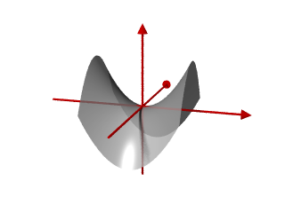

Lokale Extrema, also lokale Maxima (oder Minima), sind für reellwertige Funktionen mehrerer Veränderlicher genau so definiert wie für Funktionen einer Veränderlicher, nämlich als die Elemente des Definitionsbereichs, in denen lokal ein größter (oder kleinster) Funktionswert vorliegt. Lokal heißt dabei, dass diese Bedingung nur in einer Umgebung um den Punkt erfüllt sein muss.
Präzise formuliert hat eine auf einer offenen Teilmenge \(U\in\mathbb{R}^n\) definierte Funktion \(f:U\rightarrow\mathbb{R}\) in einem Punkt \(p\in U\) ein lokales Maximum (bzw. Minimum), genau dann wenn es eine \(\epsilon-\)Umgebung \(B_\epsilon(p)\) von \(p\) gibt, sodass f.a. \(q\in B_\epsilon(p)\) gilt
Damit in \(p\in U\) ein Extremum vorliegen kann, müssen alle partiellen Ableitungen von \(f\) in \(p\) verschwinden, d.h. der Gradient \(\mbox{grad}_pf\) von \(f\) in \(p\) muss gleich dem Nullvektor sein:
$$\mbox{grad}_pf=0$$
Das ist analog zur Bedingung \(f'(x)=0\) für eine Funktion einer Veränderlichen \(x\). Ein Punkt \(p\), in dem der Gradient von \(f\) verschwindet heißt kritischer Punkt von \(f\).
Definitheit
Definitheit von Matrizen
Die aus der Analysis einer Veränderlichen bekannte hinreichende Bedingung \(f''(x)>0\) für ein Minimum (bzw. \(f''(x)< 0\) für ein Maximum) lässt sich in höheren Dimensionen verallgemeinern. Den Platz der zweiten Ableitung nimmt die Hesse-Matrix \(\mbox{Hess}_pf\) von \(f\), die Matrix \((\mbox{Hess}_pf)_{ij}=\partial_i\partial_jf(p)\) der zweiten partiellen Ableitungen, ein. Ob ein kritischer Punkt \(p\) Extremum ist, entscheidet die Definitheit von \(\mbox{Hess}_pf\).
Eine quadratische Matrix \(A\in\mathbb{R}^{n\times n}\) heißt
positiv definit, wenn \(\langle v,Av\rangle>0\)
positiv semidefinit, wenn \(\langle v,Av\rangle\geq0\)
negativ definit, wenn \(\langle v,Av\rangle<0\)
negativ semidefinit, wenn \(\langle v,Av\rangle\leq0\)
für alle \(v\in\mathbb{R}^n\backslash\{0\}\).
Ist \(f\) zweimal stetig partiell differenzierbar, so ist \(\mbox{Hess}_pf\) wegen des Satz von Schwarz in jedem Punkt \(p\in U\) symmetrisch und damit diagonalisierbar. Es lässt sich zeigen, dass eine diagonalisierbare Matrix positiv definit ist, genau dann wenn alle Eigenwerte positiv sind (bzw. negativ definit, g.d.w. alle EW negativ sind), positiv semidefinit, g.d.w. Null Eigenwert ist und alle anderen Eigenwerte positiv (bzw. negativ semidefinit, g.d.w. Null EW ist und alle anderen EW negativ), indefinit sonst. Indefinitheit liegt also genau dann vor, wenn es zwei Vektoren \(v,w\in\mathbb{R}^n\) gibt, sodass \(\langle v,Av\rangle>0\) und \(\langle w,Aw\rangle<0\).
Test
Geben Sie für die folgenden Matrizen die Art der Definitheit an!
Die Eingabemöglichkeiten sind "p" für positive Definitheit, "ps" für positive Semidefinitheit, "n" für negative Definitheit, "ns" für negative Semidefinitheit, "i" für Indefinitheit, immer ohne Anführungszeichen. Zum Beispiel lautet die korrekte Eingabe für die \(2\times 2\) Einheitsmatrix \(E_2\) also "p".
\(E_2=\begin{pmatrix}1&0\\ 0&1\end{pmatrix}\)
\(A=\begin{pmatrix}1&0\\ 0&-1\end{pmatrix}\)
\(B=\begin{pmatrix}1&1\\ 1&1\end{pmatrix}\)
hinreichende Bedingung
Sei \(U\subset\mathbb{R}^n\) offen, \(f:U\rightarrow\mathbb{R}\) zweimal stetig differenzierbar, und sei \(p\in U\) kritischer Punkt von \(f\). Dann gilt
\(\mbox{Hess}_pf\) positiv definit \(\hspace{6mm}\Longrightarrow\hspace{5mm}\) \(p\) ist lokales Minimum.
\(\mbox{Hess}_pf\) negativ definit \(\hspace{5mm}\Longrightarrow\hspace{5mm}\) \(p\) ist lokales Maximum.
\(\mbox{Hess}_pf\) indefinit \(\hspace{17mm}\Longrightarrow\hspace{5mm}\) \(p\) ist kein Extremum.
Ist \(\mbox{Hess}_pf\) semidefinit, so lässt sich keine Aussage treffen.
Dass im Ursprung \((x,y)=(0,0)\) ein globales Minimum vorliegt folgt bereits aus der Positivität des quadratischen Terms \(x^2+y^2\) für alle \((x,y)\neq(0,0)\).
verschwindet wie erwartet im Ursprung, \(p=(0,0)\) ist also kritischer Punkt. Da in \(f\) keine Mischterme auftauchen, ist die Hesse-Matrix diagonal. Es ist
und verschwindet im Ursprung, wo gilt \(f(0,0)=d\). Da für jedes \(\epsilon>0\) gilt, dass \(f(\epsilon,0)=\epsilon^2+d>d\) und \(f(0,\epsilon)=-\epsilon^2+d<d\), kann im Ursprung weder Maximum noch Minimum vorliegen. Die Hesse-Matrix wird also als indefinit erwartet. Tatsächlich ist
$$\mbox{Hess}f=\begin{pmatrix}2&0\\ 0&-2\end{pmatrix},$$
hat also sowohl einen positiven als auch einen negativen Eigenwert und ist somit indefinit.

Hyperbolisches Paraboloid mit \(d=0\)
Für den Einheitsvektor \(e_x\) in \(x-\)Richtung gilt \(\mbox{Hess}f.e_x=2e_x\) und damit
Es ist also weder die Bedingung für positive Definitheit erfüllt, noch die für negative Definitheit, da diese für alle Vektoren (ungleich dem Nullvektro) gelten müssen.